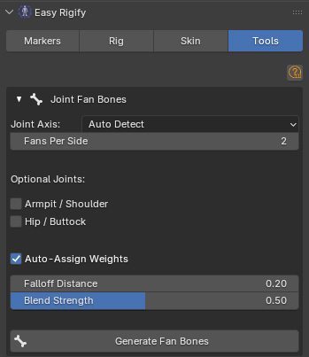
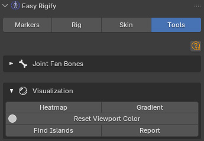

Tools Tab
View3D → Easy Rigify → Tools tab. Covers Fan Bones and weight Visualization.
1. Fan Bones
Fan Bones are extra deform bones placed around joint creases (elbows, knees, wrists, ankles) in a fan pattern. They rotate with the limb and prevent the "pinching" or volume-loss that happens at sharp bends.
How fan bones work
Each fan bone radiates outward from the joint point. It has a Copy Rotation constraint that rotates it halfway between the upper limb bone and the lower limb bone. When the elbow bends 90°, the fan bones rotate ~45°, keeping volume in the bicep and tricep area.
Weights at the joint crease are split between the original limb bones and the new fan bones, so volume is preserved through the fan.
1.1 Setup — select the armature
Fan bones are added to the armature, not the mesh. Before clicking Generate:
- Select the generated Rigify rig (not the metarig)
- Make it the active object
If Auto-Assign Weights is on, the addon will automatically find the mesh that is deformed by that armature.
1.2 Settings
Joint Axis [dropdown] — the primary bending axis of the joints.
- Auto Detect — reads the bone names to guess the axis. Wrist and ankle bones default to X; all other joints default to Y. Use this for standard Rigify rigs.
- X / Y / Z — force all fan bones to fan around the specified axis. Use when your rig has unusual bone orientations.
Fans Per Side [int 1–4, default 2] — how many fan bones to create on each side of the joint axis. The total number of fan bones per joint is Fans Per Side × 2.
- 1 = 2 total fan bones — minimal, low overhead, good for game characters
- 2 = 4 total fan bones — standard, good quality (default)
- 3 = 6 total fan bones — high quality, suitable for film characters
- 4 = 8 total fan bones — maximum quality, significant file size increase

Optional joints
Armpit / Shoulder [checkbox, default OFF] — adds fan bones at the shoulder joint where the upper arm meets the clavicle bone. Turn on for characters who do wide arm raises or have very visible shoulder/armpit deformation. Leave off for game characters, or when the pipeline's shoulder tightening already gives acceptable results.
Hip / Buttock [checkbox, default OFF] — adds fan bones at the hip joint where the thigh meets the pelvis/spine. Turn on for characters with wide leg ranges of motion, or characters in skirts/tight trousers where hip volume loss is very visible. Left off by default, as hip fan bones require careful weight setup and results depend heavily on the character's proportions.
Auto-Assign Weights [checkbox, default ON] — when on, immediately after creating the fan bones, the addon finds the mesh deformed by this armature and redistributes joint-area weights to the new fan bones. When off, fan bones are created with no vertex groups on any mesh; you must assign weights manually afterward.
Weight assignment options (visible only when Auto-Assign Weights is on)
Falloff Distance [float 0.05–5.0, default 0.2] — the radius around the joint point (in scene units) within which vertices receive fan bone weights. Vertices outside this radius are not touched.
- 0.10 — tight, only the very crease of the joint
- 0.20 — standard (default), covers the fold area well
- 0.40 — wide, useful for large characters or a large joint fold (e.g. hip of a heavyset character)
- 1.0+ — very large-scale characters (giants, creatures)
Blend Strength [factor 0.05–1.0, default 0.5] — how much weight is transferred FROM the limb bones TO the fan bones at the joint centre. A squared falloff is applied — vertices at the very joint point get the full Blend Strength amount transferred; vertices at the edge of Falloff Distance get almost none.
- 0.2 — subtle volume preservation, barely noticeable
- 0.5 — standard (default), clear volume improvement without overshadowing the limb bones
- 0.8 — strong fan influence, can look unnatural if too high
1.3 Buttons
Generate Fan Bones — detects all joint pairs in the armature, creates fan bones, adds Copy Rotation constraints, and optionally assigns weights.
Joints detected automatically:
- Elbow (upper arm → forearm)
- Knee (thigh → shin)
- Wrist (forearm → hand)
- Ankle (shin → foot)
- Shoulder/armpit (if enabled)
- Hip/buttock (if enabled)
After generation, the panel shows a count: "N fan bones active".
Remove Weights on Delete [checkbox] — when on (default), Remove All Fan Bones also deletes the vertex groups for the fan bones from every mesh that uses this armature. When off, the armature bones are removed but the vertex groups remain on the mesh. Useful if you want to inspect or repurpose the fan bone weights.
Remove All Fan Bones (visible only when fan bones exist) — deletes all bones prefixed FAN_ from the armature. Optionally also removes their vertex groups depending on the Remove Weights on Delete toggle.
1.4 Full Workflow — Step by Step
- Bind your character with the Skinning panel (Heat Map method recommended)
- Check joint quality by posing elbows and knees to 90–120°
- If volume loss is visible, select the Rigify rig
- In the Fan Bones panel, set Fans Per Side = 2
- Set Falloff Distance to approximately 15–20% of the limb bone length (for a human-scale character in metres, 0.15–0.25 is typical)
- Leave Blend Strength at 0.5
- Click Generate Fan Bones
- Pose the elbow/knee again to check improvement
- If still pinching: increase Blend Strength or Falloff Distance
- If over-bulging: decrease Blend Strength
1.5 Tips and Important Notes
- Generate Fan Bones can only be run on a generated Rigify rig (after clicking Generate Rig). It will not work on the metarig.
- Fan bones are prefixed FAN_ so they're easy to identify in the outliner and vertex group list.
- The Copy Rotation constraint uses Local space with ADD mix mode and 0.5 influence — each fan bone rotates at half the speed of the lower limb bone, creating a natural fan effect.
- Fan bones are true DEF (deform) bones — they show up in Weight Paint mode just like any other deform bone, so you can manually paint their weights if the auto-assigned ones need adjustment.
- If you regenerate the Rigify rig (e.g. after changing the metarig), all fan bones are lost. Click Generate Fan Bones again afterward.
- For game export: check your engine's bone limit. Each joint adds (Fans Per Side × 2) extra bones. With 4 joints × 4 fan bones = 16 additional bones in the rig.
2. Visualization
Group [search field] — type or search for a vertex group name. This is the target group for all visualization buttons below.
Heatmap — creates a vertex color layer on the mesh showing weight distribution as a colour ramp: blue (0.0) → yellow (0.5) → red (1.0). Automatically switches the viewport shading to Vertex Color so you can see it immediately. Use to spot weight boundaries, unexpected zero zones, or bleed areas.
Gradient — creates a vertex color layer showing the rate of change of weight (gradient magnitude). Green = smooth transition, red = sharp transition. Use to find hard weight edges that might cause animation creases — if an area is all red, the weight changes very sharply there.

Reset Viewport Color — switches the viewport shading back to Material (default), removing the vertex color overlay. Always click this after you're done visualizing.
Find Islands — detects disconnected regions where the selected bone has influence. Prints each island's vertex count to the System Console. Use when a bone's weight appears in an unexpected place, or when you want to confirm that no floating islands of weight exist for a bone that should only affect a local area.
Report — prints a statistics report for the selected vertex group to the System Console: total influenced vertices, percentage, min/max weight, mean, standard deviation, and number of islands. Use for understanding how well a bone's weight distribution spans the mesh.
Coming in the Next Update UPCOMING
The features below are in development for the next release. They are not part of the current version — this is a preview of what's ahead.
Game Engine Export (Unity & Unreal)
One click turns your generated Rigify rig and skinned meshes into a clean, engine-ready FBX — without touching your working scene.
- Clean game skeleton — only the deform bones, single root, correct parent chain (clavicle drives the arm, pelvis drives the legs)
- Engine naming — UE5 Mannequin names for Unreal or clean stripped names for Unity Humanoid/Generic
- Animation export — bake the current action, or every action in the file as its own clip in one FBX
- Preserve Twist Bones (Unreal) — keep the limb twist segments as UE Mannequin twist bones for full deformation quality
- Strip Face Bones — drop the face rig (60+ bones) and fold its weights into the head for game characters that use blend shapes
Animation Retargeting
Drop external animation clips onto your rigged character. Import a clip, pick its armature, click Retarget — the motion lands on your rig's normal controls as an editable action.
- Automatic bone mapping with presets for Mixamo, DAZ (Genesis 3/8/9), VRoid/VRM, Rokoko, and CMU BVH mocap — plus smart name matching for anything else (Character Creator, UE Mannequin...)
- Mapping editor — review and adjust every bone pair, save/load mappings as files for reuse across a clip library
- Match Clip Pose — a T-pose clip lands correctly even on an A-pose character; facing and scale differences handled automatically
- Works in FK and IK — the IK controllers are baked along with the motion, so you can polish feet with IK right after retargeting
- In Place toggle for game loops, and Batch Retarget — point at a folder of clips and get one named action per file